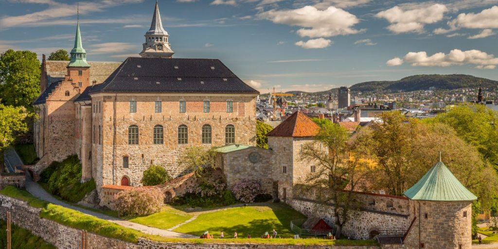
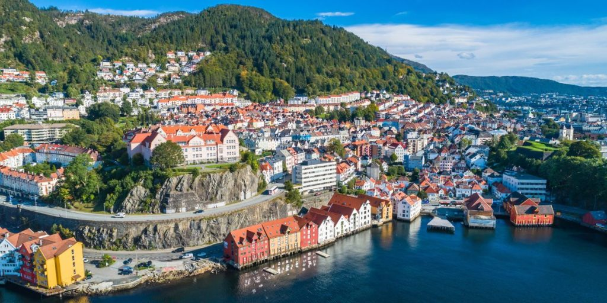
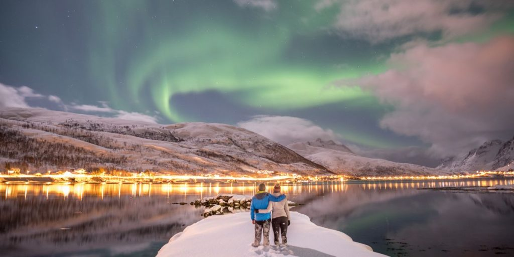

Oslo
Oslo, capital da Noruega, é uma cidade que equilibra perfeitamente a natureza exuberante com uma vida urbana dinâmica. O destino reúne diversos museus, galerias de arte e parques, além de oferecer uma vida noturna animada, tudo isso cercado por amplas áreas verdes.

Bergen
A segunda maior cidade norueguesa é famosa por suas encantadoras casas coloridas, suas sete colinas e sua vasta herança cultural. A localidade também se destaca por seus eventos, como o Festival Internacional de Música e o Festival Gastronômico de Bergen.

Aurora Boreal
A aurora boreal está entre os fenômenos naturais mais impressionantes do planeta. Para ter mais chances de presenciá-la, o ideal é visitar a Noruega entre setembro e março, período em que as noites são mais longas e escuras. As áreas mais ao norte, como Tromsø e Svalbard, oferecem as melhores condições para observação.